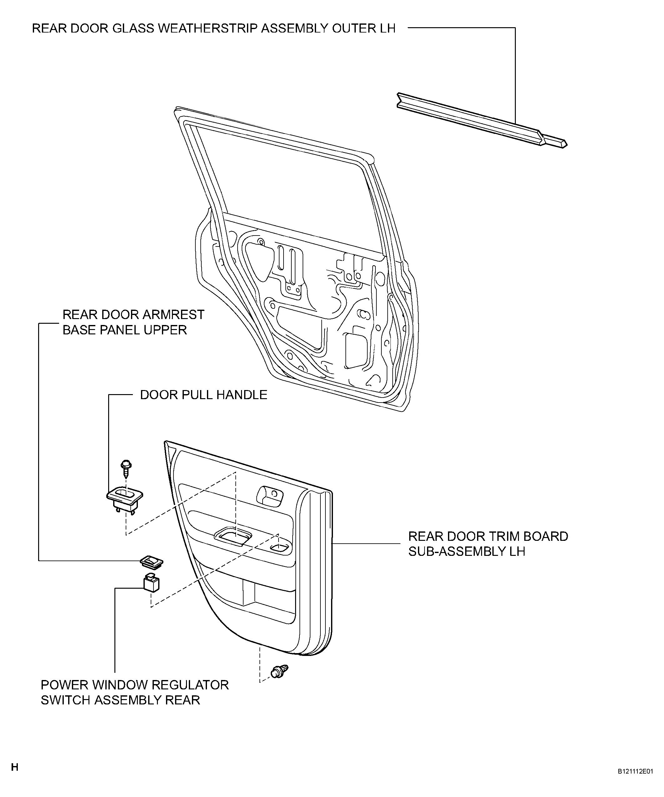

Home
>>
Scion
>>
2006
>>
xB Standard
>>
Repair and Diagnosis (Single Page)
>>
Accessories & Equipment
>>
Interior/Exterior Trim
>>
Exterior
>>
Rear Door Glass Weatherstrip
>>
Components
Rear Door Glass Weatherstrip: Components
Fig 1: Identifying Rear Door Glass Weatherstrip Components

Courtesy of © TOYOTA, LICENSE AGREEMENT TMS1002